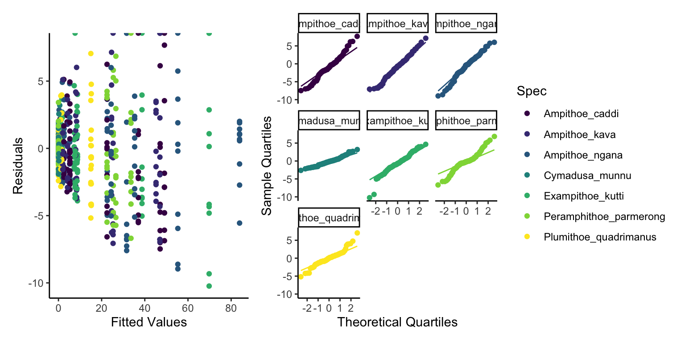

Sometimes, rather than having one single univariate response variable we may have many. For example, we may be looking at the abundance of multiple difference species from an ecosystem. We could, if we wanted, model each species separately, with a single univariate GLM for each Species. However, we would not be able to cross compare these models, meaning our interpretation of the ecosystem is flawed, as the abundances of species are related to each other through many different process, such as competitive or predation. This would also hold true for assessing expression of genes, biomarkers or molecules under certain conditions. In this case we can apply multivariate GLMs, where are response variable is a matrix of columns.
Data Loading - Herbivores
Here we will use a multivariate count data of herbivores found in different habitats, with samples being collected at night and during the day. We can see that our meta data (Habitat, DayNight, Replicate and Mass) are the first 4 columns, while the rest of the columns are our multivariate counts of different herbivores.
Our scientific question is how the multivariate abundance of herbivores changes with habitat but that our results are influenced by the timing of sampling (Day or Night).
This is a relatively simple model with an interaction of two fixed effects and can be written as:
Multivariate Count of Herbivores ~ Habitat*DayNight
Step Two - Response Variable Distribution
The number of herbivores is a count response where there is no theoretical limit. Therefore the values can range from 0 upwards. This tells us that is most likely a Poisson distribution. Although we will come back to this.
Step Three - Organising Fixed Effects
Our fixed effects are quite simple, we have 20 samples of 5 different habitats, half of which were collected during the day and half collected at night.
Lets fit the model using the manyglm function, we add our statistical formula with the interaction term, our data and then we specify that the family or distribution we want to use is poisson. To input our multivariate response variable into manyglms we have to convert the abundance columns into a matrix object. We can do this with the mvabund() function.
Warning: Removed 14 rows containing non-finite outside the scale range
(`stat_qq()`).
Warning: Removed 14 rows containing non-finite outside the scale range
(`stat_qq_line()`).

We see some fairly mixed results here. The normality of residuals is good with almost all points following the line, whereas our homogenerity of variance is poor, we can clearly see less variance in low fitted values and high variance in high fitted values. This is likely due to overdispersion. This over dispersion might make us want to use a distribution that is more able to deal with over dispersion, such as Negative Binomial. So we shall do this and try again to see if the Negative Binomial model works better.
This now looks a lot better, not perfect but still a lot better. So lets start a bit of interpretation.
summary(glm2)
Test statistics:
wald value Pr(>wald)
(Intercept) 8.272 0.001 ***
HabitatDictyopteris_acrostichoides 12.656 0.001 ***
HabitatSargassum_linearifolium 12.836 0.001 ***
HabitatSargassum_vestitum 8.553 0.001 ***
HabitatZonaria_diesingiana 9.120 0.001 ***
DayNightN 3.140 0.128
HabitatDictyopteris_acrostichoides:DayNightN 2.723 0.074 .
HabitatSargassum_linearifolium:DayNightN 1.882 0.331
HabitatSargassum_vestitum:DayNightN 3.020 0.037 *
HabitatZonaria_diesingiana:DayNightN 1.971 0.493
---
Signif. codes: 0 '***' 0.001 '**' 0.01 '*' 0.05 '.' 0.1 ' ' 1
Test statistic: 27.76, p-value: 0.001
Arguments:
Test statistics calculated assuming response assumed to be uncorrelated
P-value calculated using 999 resampling iterations via pit.trap resampling (to account for correlation in testing).
Okay there are a lot of numbers here but what does it actually mean?
We won’t write out the equation here because it will be a lot of effort and be almost impossible to interpret, so what we will do is plot the model results.
When we plot the estimates into this equation, this should be similar to our raw data but not identical. Remember we are creating a model to Generalise the patterns of the raw data, not copy them!
Step Five - Model Interpretation
Thankfully, as always, we don’t have to extract each \(\beta\) parameter from the summary table as R has useful functions that can do this for us! To do this we make simulated raw data with the same predictor variables in.
We then use the model to predict() the response variable based on those predictor variables.
Therefore, we make a data set with Habitats and DayNight the same as our original data (be careful of spelling and capitalisation, R wants it identical).
The model then predicts the average Count of the different herbivores based on those Habitats and Day times.
We can also tell the predict function to predict error (Standard Error here that we then convert to an approximation of the 95% confidence interval).
Note that here I tell Predict that I want the fit to be returned on the response scale and not the link scale.
Now when we get the Pred object we have a fit column for each of our herbivore species and a se.fit column also. Annoyingly, fit has the species names, while se.fit doesn’t but we can use the order of columns to rename fit columns properly.
It looks okay, but we can see we are under predicting the extreme values. But we can clearly see that certain species are more associated with certain habitats. For example, Cymadusa munnu seems to be exclusively found in the Colpomenia peregrina habitat (slightly higher counts in the day than night), while the Amphipods of the Amphithoe genus (Amphithoe caddi, Amphithoe kava and Amphithoe ngana) seemed to prefer Dictyopteris acrostichoides and Sargassum linearifolium, regarless of timing.